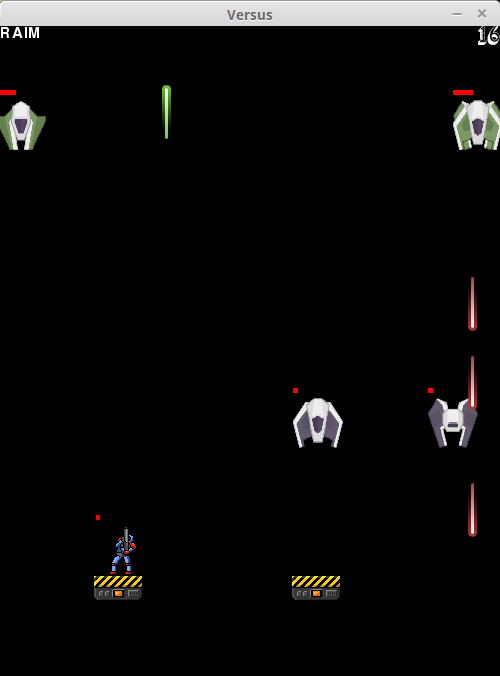
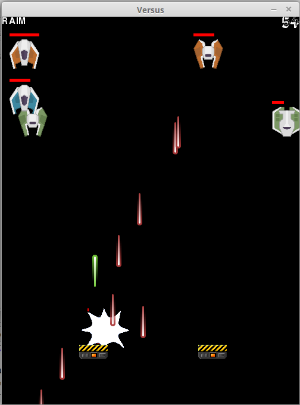

Welcome to the Versus Site
Versus is a 2D game programmed in C++ using the Allegro 5 library. It started as a project for our Programming III class, and is currently in its first version. If you're interested in dabbling with the code yourself you may fork this project. Currently there's only a Linux version of the game, though we're considering cross-compiling for Windows in the future.
The Allegro 5 dependencies are needed to play the game or run the project. We suggest following tutorial for installing them on Linux.
Gameplay and Screenshots
The following is actual gameplay and some screenshots of the game.
 
License
Copyright (C) 2015 Nexer Rodríguez (rnexer) and Ricardo A. Interiano (Raim)
This program is free software: you can redistribute it and/or modify
it under the terms of the GNU General Public License as published by
the Free Software Foundation, either version 3 of the License, or
(at your option) any later version.
This program is distributed in the hope that it will be useful,
but WITHOUT ANY WARRANTY; without even the implied warranty of
MERCHANTABILITY or FITNESS FOR A PARTICULAR PURPOSE.
See the GNU General Public License for more details.
Authors and Contributors
Most assets for the game were taken from Open Game Art. We would like to thank the following persons for sharing their
assets online:
- Master484 whose Open Gunner Kit and Expansion Pack were used for the main character and platforms in-game.
- Kenney whose Space Shooter Redux and Kenney Fonts collections we used for the enemies and in-game text.
- Alexandr Zhelanov whose song So, let see, what you can was used for the main menu.
- Gundatsch whose song Raining Bits was used for the main game music.
- Lamoot from the Blender Foundation whose Stop sound was used for the laser collision on platform sounds.
Support or Contact
If you're having any trouble with the game, feel free to create a new issue so we can get that fixed.